Histoire de l’eau à ROUHLING
(Du 6ème au 20ème siècle)
Les sources
Sans vouloir remonter plusieurs siècles en arrière, il convient cependant de remarquer que les premières habitations s'étaient principalement installées à proximité d'une rivière, d'une source, bref près d'un point d'eau. L'agriculture et l'élevage dépendaient étroitement de sa répartition.
Nos grands-parents, vivant généralement dans une exploitation agricole pour la plupart, parcourant inlassablement la campagne, connaissaient parfaitement tous les points d'eau naturels, n'hésitaient pas à boire l'eau de telle source tant elle était connue comme "une très grande eau".
Pendant la fenaison notamment, les parents chargeaient les enfants d'aller à l'une ou l'autre des sources remplir des bidons de cette eau fraîche et limpide qui n'avait rien à envier à celle qu'on dispose de nos jours dans une glacière pour la maintenir fraîche. Et quel plaisir alors pour tout ce petit monde que de la déguster et de s'asperger le visage après tant d'efforts pour charger une charrette de foin par une grande canicule !
L'on dénombre encore aujourd'hui une bonne douzaine de ces sources parmi lesquelles nous citerons "le Hergottsbrunnen", "le Käsbrunnen", "le Hettlingerbrunnen"… qui comptent parmi les plus connues.
Le premier abreuvoir connu à Rouhling
Le village de Rouhling, comme tout habitat humain, a été construit près d'un point d'eau, en l'occurrence la fontaine du milieu du village qu'on appelait, jadis « Oberster Brunnen ».
Ci-dessous, reproduction d'une partie du texte d'archive le plus ancien, daté du 28 juin 1755 où la municipalité avait décidé l'installation d'un nouvel abreuvoir, à tailler dans un gros chêne.
Bien que Rouhling possédât encore des forêts à l'époque, celles-ci ne contenaient pas d'arbres aptes à cet ouvrage, mais on trouva un « chêne de haie » au lieu-dit « Ackerheck », c'est-à-dire entre la route de Sarreguemines et l’espace sportif actuel.
A remarquer encore que « le reste de bois » avait servi à régler une dette à un particulier qui avait avancé de l'argent à la municipalité pour payer un géomètre, ceci prouve l'extrême pauvreté des communautés villageoises de cette époque.
En 1755, on était loin de pouvoir s'offrir l'aménagement luxueux d'aujourd'hui où cette fontaine, historique à plus d'un titre, est devenue un ornement agréable, presque un havre de paix au milieu du tumulte de l'avenue de la Paix.
HEIT.DATO.DEN.28.HEYMONAT.DIESES.JAHR.1755.HAT.DIE.GEMEIN.RULINGEN.GEFUNDEN.DAS.ES.EIN.BURENTROG.VON.NEBEN.WAR.EUD.HABEN.ANGEGRESTEN.EIN.EICHBAUM.OBEN.AN.DER.ACKERHECK.UND.DAS.ÜBRIGE.HOLZ.AN.LICHT.GESETZ.UND.VERSTEYD.UND.IST.GEBLIEBEN.DEM.LAMBER.MASIN.UMB.FÜNFZEN.LIBER.UND.ZEN.SU…
Traduction de l’extrait de l’acte
Ce jour 28 juin de l'an 1755, la municipalité de Rouhling a jugé qu'un abreuvoir était nécessaire et a choisi un chêne en haut de la « Ackerheck » et a vendu le bois restant aux enchères à l'encan, qui est resté à Lamber MASIN pour 15 livres et 10 sous.
(L'abreuvoir doit avoir 15 pieds de long à prendre au bout le plus apte. Ladite somme de 15 livres 10 sous a été déduite par Lamber MASIN du prêt de 2 « thalers » qu'il avait consenti aux tribunaux pour le géomètre sur le ban de Grosbliederstroff.)
Nota : 15 pieds mesurent environ 4,85 mètres
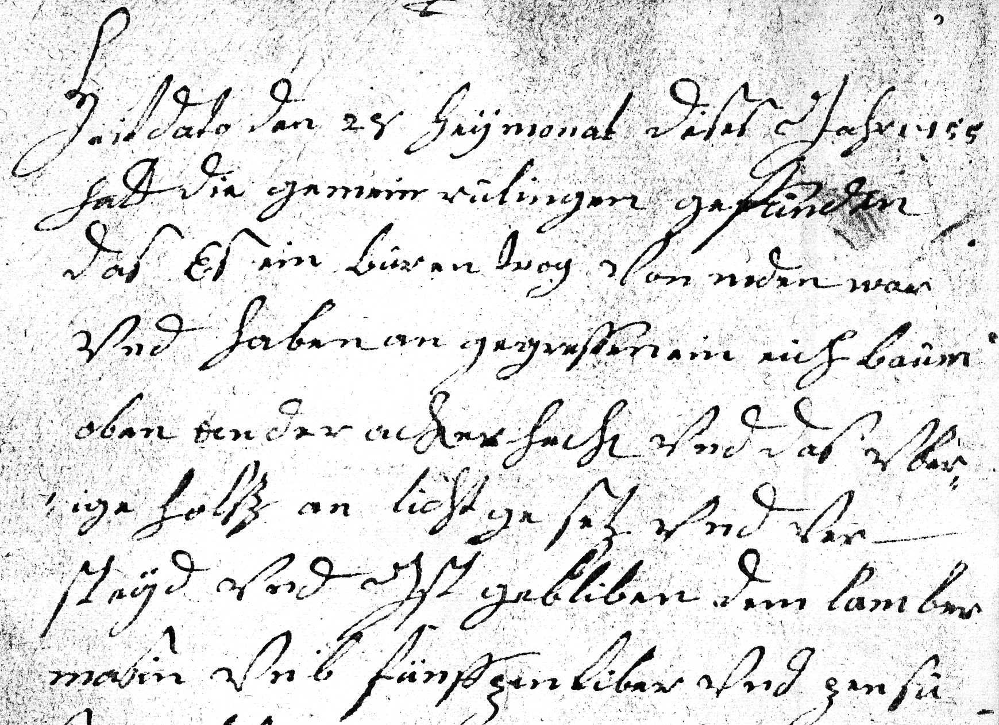
La reconstruction du village après la guerre obligea le déplacement de la « fontaine du haut » qui devint ainsi la « fontaine du bas » du village.
Mais sait-on aujourd’hui que les eaux qui toute l’année, sans interruption jaillissent en cette fontaine coulaient autrefois en d’autres lieux et avaient un usage beaucoup plus terre à terre.
« L’Ewerstburre » (fontaine du haut) était en fait situé entre les maisons n°38 et n°40 de l’avenue de la Paix, près de 100 mètres plus haut.
Il demeure encore aujourd’hui quelques vestiges enterrés de cette implantation. La fontaine à l’époque alimentait deux auges en maçonnerie, une troisième en grès fut ajoutée dans les années 30. Le nombre de têtes de bétail ayant augmenté, il y avait quelquefois pénurie d’eau aux heures de grandes affluences.
Dans cette partie basse, justement, non loin de là était la « Philippspump ».
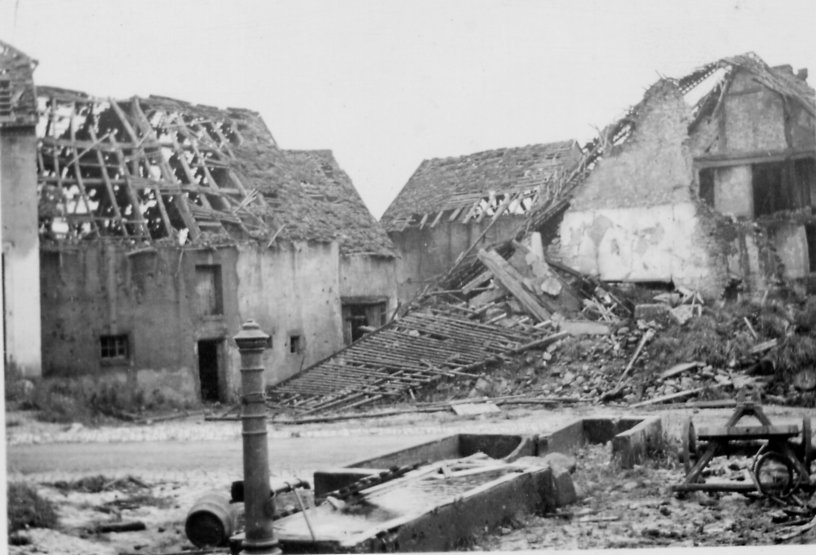
L'eau servait aux mêmes usages mais devait être pompée. Elle provenait d'un « réservoir incendie » d'une quinzaine de m3, situé à côté.
Le bassin était recouvert d'une porte en métal à deux battants pouvant être ouverte en cas d'urgence. On accédait à l'eau par un escalier.
Les choses ont bien changé aujourd'hui, mais le plaisir de voir l'eau couler continuellement et naturellement restent le même.
Près de 3 siècles après, on était loin de pouvoir s’offrir l’aménagement luxueux d’aujourd’hui, où cette fontaine historique à plus d’un titre est devenue un ornement agréable, presqu’un havre de paix en bordure de l’Avenue de la Paix.
Petite histoire de la fontaine … « DEBES »
La municipalité de Grosbliederstroff, lors du 2ème mandat de son maire Marcel MAURER (1965-1970), effectua de nombreux travaux de trottoirs et de canalisations. Deux anciennes fontaines furent déposées à la décharge, parce qu’elles entravaient les futurs travaux de voirie. L’une, fut la fontaine-abreuvoir qui gênait l'aménagement du carrefour de la chapelle, rue de Alsting. L’autre qui nous intéresse, est la fontaine de « Niederhofen » dans le bas du village, rue de la République.
Certains Blitériens diront, que Rouhling s’est accaparée avec malice la fontaine de « Niederhofen ». Ils avanceront également, que d’après d’anciens Rouhlingeois, ce fut une revanche sur le riche voisin, qui les aurait, selon une histoire légendaire, injustement et malhonnêtement dépouillé de leur forêt.
Ce ne fut pas une revanche, mais un acte « d’anti-gaspillage » effectué par le voisin Rouhlingeois, déjà à l’avant-garde de son temps.
Cette soi-disante légende, est un véritable contentieux datant du milieu du 18ème siècle qui concernait les limites de la forêt entre Grosbliederstroff et Rouhling. Vous pourrez retrouver la version officielle et détaillée avec les différents actes dans le livre « Rouhling - Compléments d’Histoire ».
Fontaine devant l’Eglise
En 1901 la commune a adopté un projet qui consistait à canaliser les eaux de la source venant du lieu-dit Reben et de la réceptionner dans un réservoir qui existe toujours. Cette eau sera acheminée jusque devant l’église et surgissait d’une fontaine (Hiwellerburre) qui toute l’année alimentait deux auges d’abreuvoir utilisée pour le bétail. Une 3ème fut ajoutée au début des années 30 pour le rinçage du linge et la consommation des gens.
1912 - Uncontentieuxpour une fontaine
-MairecontreMaire-
Leshistoriensestimentqu’ilyaeudepuisquelemondeestmonde, 1353GUERRESentreNations;lesguerrestribalessecomptentparmillionsalorsqueleslitigesetautresquerellesdevoisinageentreparticuliers,communes,administrations,autoritésciviles,militaires,religieuses...parmilliards. Lepremier,entrelesdénommésCAÏNetABELavecissue*fatale… *
ROUHLING,detouteévidence,n’apaséchappéàlarègle:querellesaveclesseigneurs,lesvillagesvoisins,particulierscontestantdesdécisionsjugées iniquesouentreeuxpourladéfenseinstinctivede leur« territoire ».
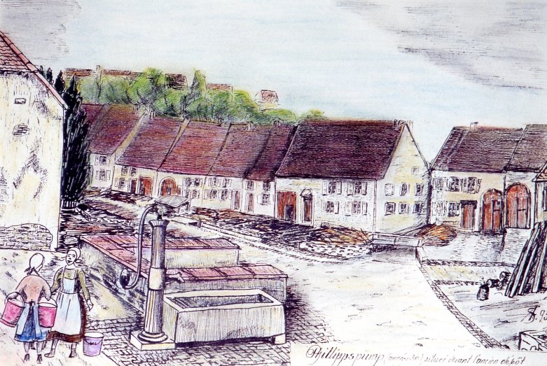
Nousavonsdéjàfaitallusion à ces querelles et avons relaté quelques articles, commele « ProcèsdelaCorvée ». Unesituationconflictuellequiaduré27ans,au 18ème siècle.
La querelle qui est relatée concerneun« Conflit interne ». Uncitoyen,futurmaire,quis’opposeàlaMunicipalité. Noussommesen1912.
LesProtagonistes
LaMunicipalité:unconseilde8membrescitésci-aprèsaveclemaire,M.NicolasJUNG,âgéde72ans,cultivateur,mairedepuis10ansdéjà,adémissionnéen1914etdécédéen1917.
Ilfutàsontour,éluauConseilMunicipalen1919,éluadjointen1924etdevintlemairedeRouhlingle 17mai1925,jusqu’en1934.
Doncuncontentieuxentreunfuturmaireet un maireenexercice!
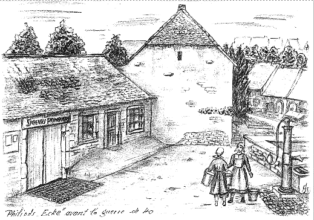
L’Origineduconflit
JosephFERSING,surnommé« WARY’SGROSSER »parlesRouhlingeois,habitaitlamaisoninférieurede« l’IlotCentral »,enfaceduCaféJung.
La 2èmemaison dite« Lamber’sAltHuss »étaitcontiguëcôtéamontalorsqueles3autrescôtésétaientlimitrophesdela voiepublique,l’undonnantsurlaplaceoùétaitinstallé« La Fontaine »dite« ObersterBrunen »avecses2abreuvoirs,l’objetdulitige(voirphotoet plan).

Cettesituationavaitdesavantages:proximitédes abreuvoirspourfaireboiressesbêtes,vueimprenablesur la place et la rue du village en contrebas ; maisaussidesinconvénients:pasunseulmètrecarréd’usoirautourdelamaison;fait,atténuéparlebâtimentgrange,fenil…qu’ilpossédaitjusteenface.Leslimitesdepropriétén’étaientpasdéfiniesavec précision.Pasvraimentderaisondelancerunprocèsd’intentionàlamunicipalité!
MonsieurJosephFERSING,néen1861,veuf,cultivateur,mariéavecMadeleine MEYERdeThéding,décédéeen1895,pèred’unefille.AquittéRouhling en1934,audécèsdesasœurquiluitenaitménage, pourallerchezsafilleCatherineau« Rothof » à Francaltroff,oùil décédaen1936.
LeConseilsefâche…
Vous trouverez ci-après un extrait original durapportétabliàlasuitedelaséancedu ConseilMunicipaldu28décembre1912, difficilementlisibleetcompréhensiblepar unemajoritédelecteurs.En revanche, pour pourrez lire la traduction intégrale en français.
Chacun pourra se faire son opinion !
Traductionintégrale :
Séancedu28/11/1912
Sontprésents :M.leMaireNicolasJUNG,lesmembresduConseilMunicipal : NicolasWARY,HenriFERSING,JeanJUNG,JeanKLAM,NicolasSPOHR,AndréJUNGetJean SCHMITT.
AprèsqueleConseilréuniai prisconnaissancedelalettredeM.JosephFERSINGdu24novembreildécidecequisuit et d’adresserparl’intermédiaireduPolicierMunicipalàM.FERSINGunecopietextuelledecettedécision.
Danslasuppositionquel’actuelemplacementduréservoird’eaudelafontaineaitétééchangéavecl’ancienemplacementdeceréservoiretqueparailleursiln’existeaucunepreuvepermettantd’autressuppositionsetquelesanciensmembresduConseilMunicipaln’ontaucuneconnaissanced’unautreaccordémanant lors d’unprécédentmandat,les élus décidentdemaintenirl’emplacementduréservoird’eaude lafontainedanssapositionactuelle.
Persuadéd’avoirtoujoursagienbonneconscienceetsansdevilesmotivations,dansl’intérêtdelaCommuneetaussidenepouvoiragirdifféremmentdansl’avenirencetteaffaire,leConseilMunicipalréfuteavecindignationlesreprochesdeM.FERSINGtels« déboutementdérisoire »et« appropriationillégaledeterrain » etrefuseénergiquementàl’avenirdetellesinsinuations.
AyantassezdestracasseriesetlamentationsinterminablesdeM.FERSING,leConseilMunicipalsouhaiteetespèrequ’ilmettesamenaceàexécution, de porterplainterapidement, pourquecettedéplaisanteaffairetrouveenfinuneissueetquelatranquillitéetlapaixreviennent.
Avantexécutiondesadécision,M.FERSINGestpriédeneplusimportunerleConseilMunicipalaveccette affaire.(Acte suivide8signatures)
Commentaires
Nousn’avonsaucunetracede« lettres »adresséesavantladatedu 28/11/1912 àlaCommuneetneconnaissonsdoncnullementlesmotivationsetlesargumentsdececitoyenrouhlingeois.
Ilapparaitquecetteroute étaitprésentedepuisunequinzainedesiècles,encerclantsamaison(undiverticulum del’époquegallo-romaine!).Pourquoia-t-elleété« bifurquée »àcetendroit?
Lafontaine étaitsansdoutele« Pointd’eau »prèsduquellevillageancienaétéconstruitversledébutdu 6èmesiècle!
Aucunetracedetravauxàcettefontaineconcernantundéplacementduréservoirenterré.Cependant,le28juin1755,doncplusde150ansavantceconflit,lamunicipalitéavaitdécidéderemplacerun vieilabreuvoirdélabréparunnouveautaillédansunegrumedechênedeprèsde5mètresdelong.
Lesdeuxmaisonsdecetilotontétéconstruitesvers1620;ellesavaientdoncàl’époqueprèsdetroissièclesd’âge.Sansdouteyavait-ild’autresconstructionsàcetendroitavantcettedate.
Donc,unesituationdefacto,quiavaitétéacceptéependantdessièclespardesdizainesdegénérations!! Alors,pourquoicetteréactionvirulente?
IlestàsupposerqueM.FERSINGenavaitassezdeparcourirjournellementunecentainedemètresavecsesbrouettesdefumieretcherchaitunemplacement plusprèsdesonécurieetdesonétable.
Sachantqu’untas de fumier,enamontdelafontaine, juste au-dessusduréservoird’eau, polluantuneeaupotablevitale,neseraitjamaisacceptéparlapopulation,ilacherché en vain, àfairedéplacerle réservoird’eaudelafontaine.
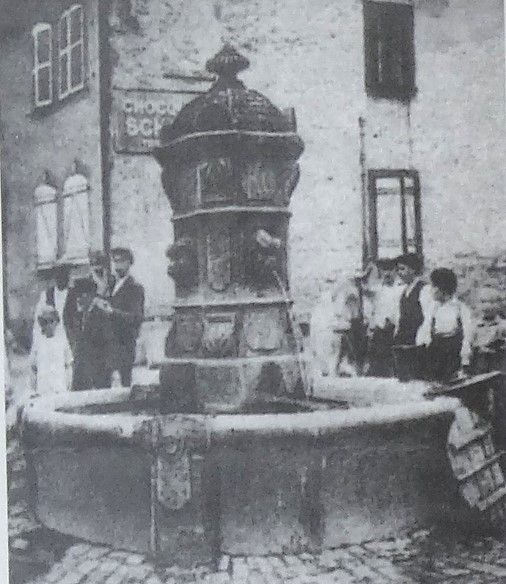
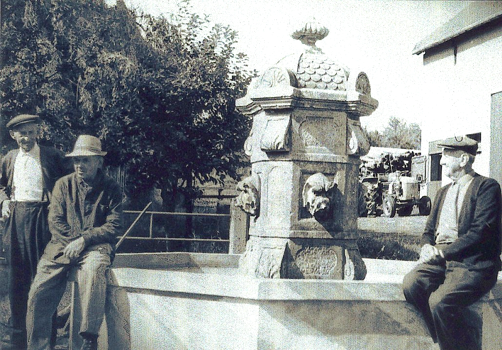
Cettehistoireimposeuneconclusionétonnante:quandleplaignantfut devenu maire, près de 10 ans après,l’affairen’aplusétéévoquéeet « il n’a rien fait » !
C’étaitdoncune « bulle de savon », contenantun « gaz hilarant » !
La Fontaine du chêne
Pendant deux décennies , l’eau ne coula plus de la fontaine devant l’église. La source n’était pas tarie, mais la canalisation avait vieilli et présentait de nombreuses fuites et des bouchons.
Le lieu-dit « Reben » d’où jailli la source est à proximité de la rue du Vignoble. Quant à poser une nouvelle conduite afin d’amener l’eau à la fontaine devant l’église, cela n’était plus envisageable.
Il aurait fallu traverser l’Avenue de la Paix et passer sous certaines maisons nouvellement construites.
Le Conseil Municipal décida en 1992, qu’il serait plus judicieux de rester du même côté de la route départementale et de poser une nouvelle canalisation qui pourrait amener l’eau à une nouvelle fontaine. Celle-ci serait installée au pied du majestueux chêne, dans le bas du cimetière juif, avec des abords aménagés pour le public.
Avec l’accord bienveillant des propriétaires des terrains, la pose du nouveau tuyau a pu s’effectuer en 1993. L’entreprise SATEM de Faulquemont avait été retenue pour les travaux
Quant à la fontaine proprement dite, il faudra attendre l’année suivante pour la réaliser. Mais au préalable, les spécialistes de l’ONF effectueront une taille douce du grand chêne, histoire de lui redonner une nouvelle jeunesse.
Nouvelle fontaine, place de l’église
En 1996, à la suite de la rénovation de la place de l’église et au réaménagement complet des abords, une fontaine d’agrément fut installée à la même place que l’ancien abreuvoir, démonté en 1966.
(La provenance de l’alimentation en eau est différente de celle de 1901)
Les pompes à bras…
Dans la commune de nombreuses pompes à bras avec un bac de réception, plus ou moins grand, ont été dénombrées avant la guerre, grâce aux diverses photos fournie par les anciens.
Une très vielle pierre … pour une très vielle source !
Tous les gens de Rouhling, ainsi que les promeneurs connaissent le coin idyllique le long du « Allmengweg » (chemin menant au golf), situé au lieu-dit « Herckerswiese ».
En 2009, la commune a souhaité réhabiliter une ancienne source qui était, disons-le, un peu laissé à l'abandon. Plusieurs personnes ont participé à ces travaux, les associations des arboriculteurs et des jardins ouvriers. Mais le plus gros du travail a été réalisé par les adolescents d’un chantier projet et les ouvriers communaux.
Le but de cette réhabilitation était de faire profiter un grand nombre de personnes qui chaque jour, empruntent ce chemin.
**La source **
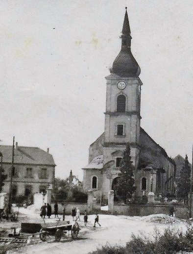
Dans la langue du pays, elle est appelée « Herrkerschburre », une déformation de l'allemand « Herrgottsbrunnen », un nom qui lui a été donné il y a des siècles.
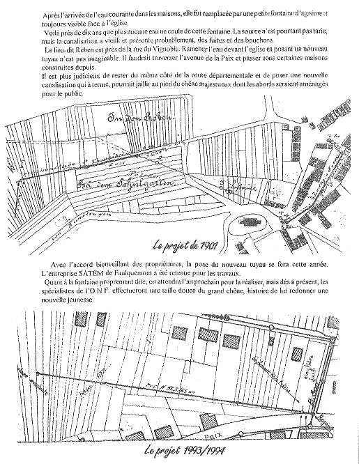
Petite histoire de la source
Une inscription dans un registre municipal ancien, fait mention d'une grande période de sécheresse au milieu du 19ème siècle. Lors de cette sécheresse, elle était la seule source ayant encore de l'eau dans tout le village, en raison de sa provenance de couches très profondes situées au niveau du lieu-dit « Espen ». A cette période-là, les femmes allaient y laver leur linge malgré la distance qui la séparait du village et les gens ainsi que leur bétail étaient heureux de trouver un point d'eau fraîche pour se désaltérer.
Aménagement de l’espace de repos
Il a consisté à poser une pierre ronde de 1,70 mètre de diamètre, munie d'une concavité centrale recueillant l'eau qui est ensuite canalisée vers le ruisseau.
Cette pierre avait servi pendant des années, de bac à fleurs au carrefour de la rue de l'Église et de l’Avenue de la Paix, devant la ferme du « Erbhof ».
L'eau de la source « rafraîchit » les visiteurs et le banc « repose » les marcheurs qui viennent de boucler les 6 km du tour du golf ! Il y a aussi des fleurs et des chants d'oiseaux.
La tradition orale dit que cette pierre taillée en grés provient du "Altenhof" et qu’elle était la partie basse d'un moulin à grains à traction animale.
Historique du Altenhof
Il est considéré par les historiens comme une « VILLA REGIA » de l'époque de Clovis (vers l'an 500). Cette ferme est décrite au folio 283 du « SAALBUCH » de l'an 1536, d'une surface d'une trentaine d'hectares : de pré, terre et forêt, appartenant à l'Abbaye de THOLEY.
Ce document la situe au versant nord de la côte, au bord de la voie romaine appelée « Hochstrasse ». Un autre document de 1688 mentionne encore cette ferme mais signale la destruction des bâtiments, sans doute intervenue pendant la guerre de Trente ans, vers 1636. Cet endroit est maintenant recouvert par la nouvelle forêt de Rouhling.
La pierre du moulin
Ce type de moulin avec une pierre verticale qui tournait en rond sur le socle où étaient répandus les grains à moudre, a existé au Moyen Age dans les fermes isolées alors que les moulins à eau ou à vent étaient banaux et faisaient parties des privilèges seigneuriaux.
La photo ci-contre montre bien le fonctionnement avec l'axe sur lequel était fixé l'arc dans lequel était attelé l'animal de trait qui tournait à l'extérieur du socle.
Ce type de moulin existait déjà dans la haute antiquité : il est cité dans des textes évangéliques (Marc IX-41 et Mathieu XVIII-6) dans lesquels il est désigné par le terme latin « Mola Asinaria », soit « la meule que tourne un âne ».
Alimentation domestique de l’eau de la Commune (1945-1950)
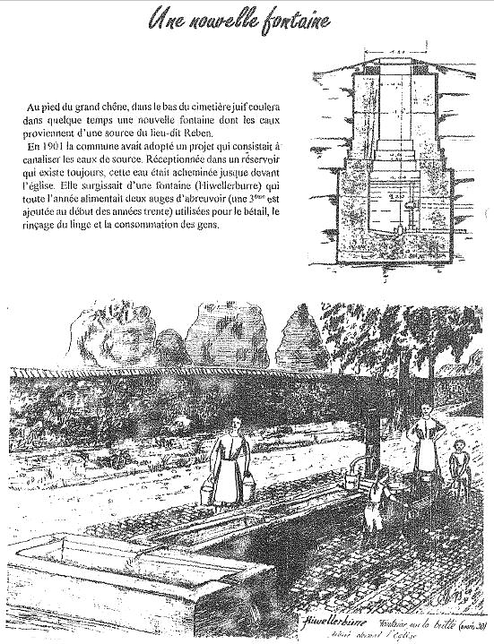

Provenance de l’eau : Premiers forages
L'eau provenait d'une station de pompage qui avait été construite à Grosbliederstroff par les Houillères du Bassin de Lorraine entre 1945 et 1950.
La profondeur du forage était de 200 mètres, la pompe était installée à 140 mètres de profondeur. Cette station alimentait toute la commune de Rouhling, la « Cité » de la Sablonnière, le CES et la centrale électrique des HBL de Grosbliederstroff.
Le pompage journalier était d’environ de 500m3. L'eau du réservoir était continuellement remplacée en quantité suffisante. Suivant le besoin en eau, les pompes pouvaient fonctionner 24 heures sur 24, mais en général elle fonctionnait surtout la nuit car l’électricité était moins chère.
Les canalisations avaient une longueur de 6500 mètres, plus 2100 mètres de branchements. Les conduites principales mesuraient entre 6 et 20 cm de diamètre. Elles étaient enterrées à une profondeur suffisante afin d’être hors gel. C’étaient principalement des tuyaux en fonte.
Le château d'eau
Il a été construit en 1954. La hauteur de la tour est de 16,40 mètres et la capacité du réservoir est de 500m3. Il est à une altitude de 335 mètres.
Le niveau de l'eau dans le réservoir était variable avec une différence de niveau d’environ 5m3. Le volume d'eau distribuée dans la commune de Rouhling était d’environ 300m3 par jour.
L'eau était analysée régulièrement dans un laboratoire. Elle était potable et contenait des sels minéraux en quantité normale, mais elle contenait un peu trop de fer. C'est pourquoi il a fallu la déferriser à la sortie de la station de pompage, par filtration et oxydation. Elle ne contenait pas de microbes dangereux.
L’arrivée de l’eau courante dans le vieux village
Dès 1956, les Houillères du Bassin de Lorraine (HBL) avaient accepté de fournir l’eau à l’ancien village. Le 02 avril 1959, un emprunt de 6 millions d’anciens francs est décidé, mais le mois suivant, il doit être porté à 12 millions, remboursables en 30 ans.
Le 29 novembre 1959, les établissements VINCENT de Haguenau fournirent 120 compteurs pour 616 000 anciens francs. La pose fut confiée à l’entreprise WILLWOHL de Bitche pour 350 000 anciens francs.
La fourniture de la 2ème tranche fut décidée le 27 mars 1960. C’est aussi, qu’à cette époque nait l’idée d’un réseau d’assainissement. En mai et juin 1960, les prix et conditions de fourniture de l’eau aux particuliers sont fixés. Les HBL facturent à la Commune 0.5107NF le m3 et la Commune demande aux abonnés 0.80NF le m3 et 1.5NF par mois de location de compteur. (NF = Nouveau Franc)
Un minimum de consommation mensuelle est également fixé à :
-
3 m3 pour les ménages jusqu’à 3 personnes
-
5 m3 pour les ménages de 4 personnes et plus
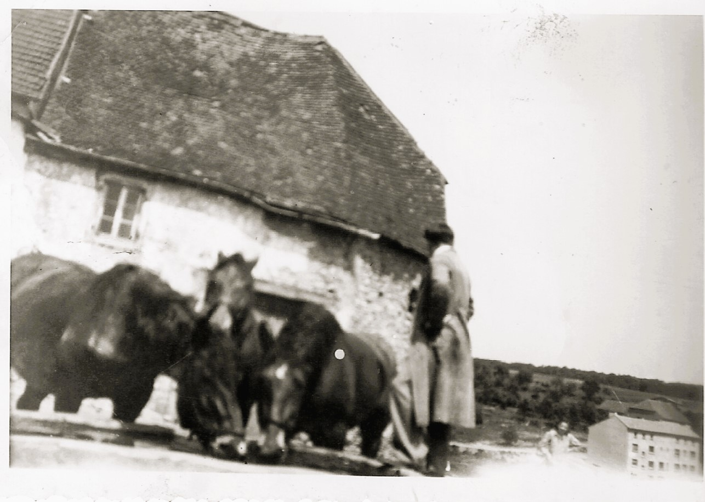
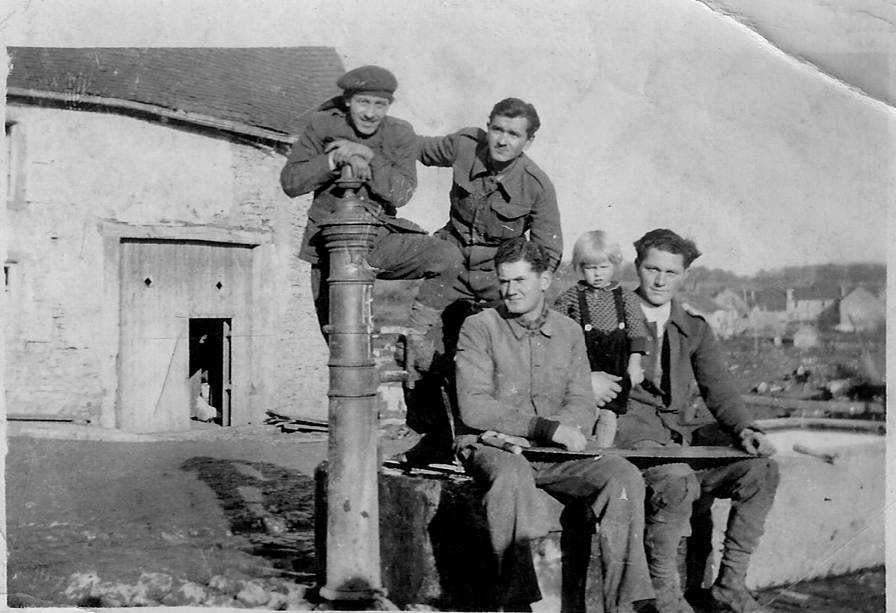
- 1 m3 et demi par tête de gros bétail
*Pour matérialiser cette dernière mesure, les abreuvoirs seront à supprimer courant 1961 et remplacer par des fontaines décoratives. *
Cela mettra fin aux deux promenades quotidiennes des vaches à travers le village et facilitera le travail de la commission d’embellissement de la Commune !
Nouveaux forages – 1997 : Actuellement toujours en service
Les anciens forages, ne produisant plus que des eaux dépassant les teneurs maximales admissibles en chlorure et en sodium, les communes du Grosbliederstroff, Lixing-lès-Rouhling et Rouhling ont créé en 1992, le syndicat de production d'eau potable de la région de Grosbliederstroff.
Depuis le 03 juillet 1997, notre commune est fournie en eau par ce syndicat. L'eau provient de 2 forages distants de 500 mètres situé sur le plateau « Ermerich » du banc de la commune de Alsting. Les pompes ayant chacune un débit de 60m3/heure, captent la nappe phréatique à une profondeur de 215 mètres environ. Le syndicat produit plus de 300 000m3/an, dont environ 80 000m3 pour desservir Rouhling.
L’eau, avant d’arriver dans notre château d'eau, aura parcouru environ 6 km de canalisation, transité par deux réservoirs et sera passé par une station de surpression.
Joseph WACK
Raymond LEHMANN
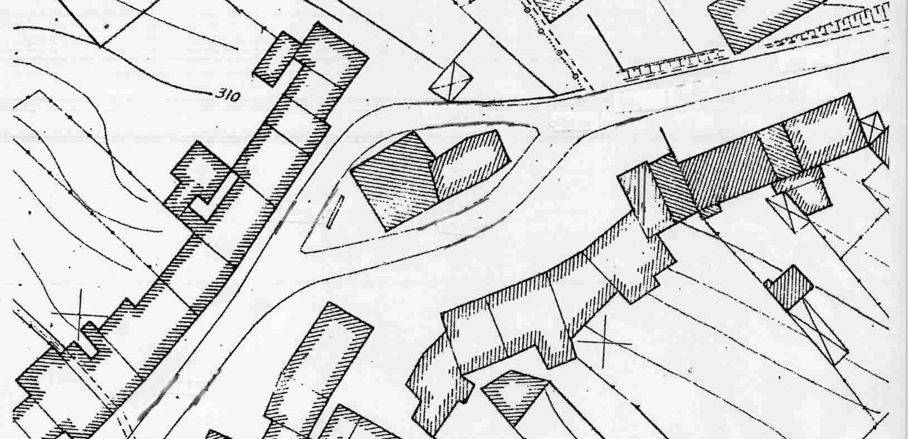
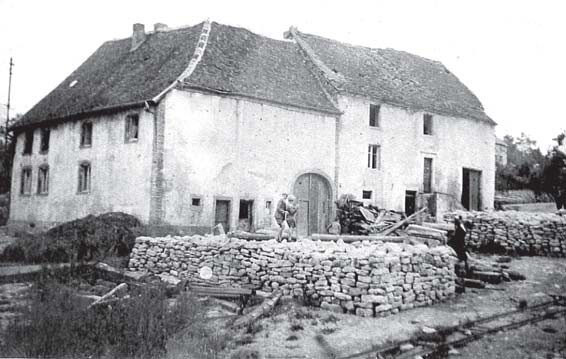
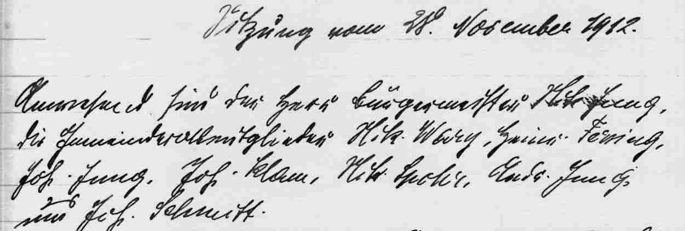
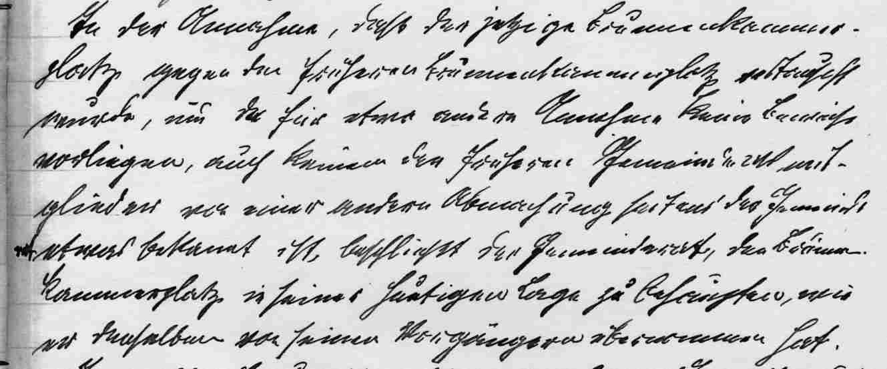
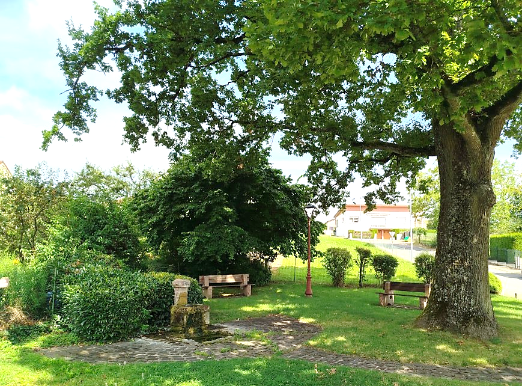
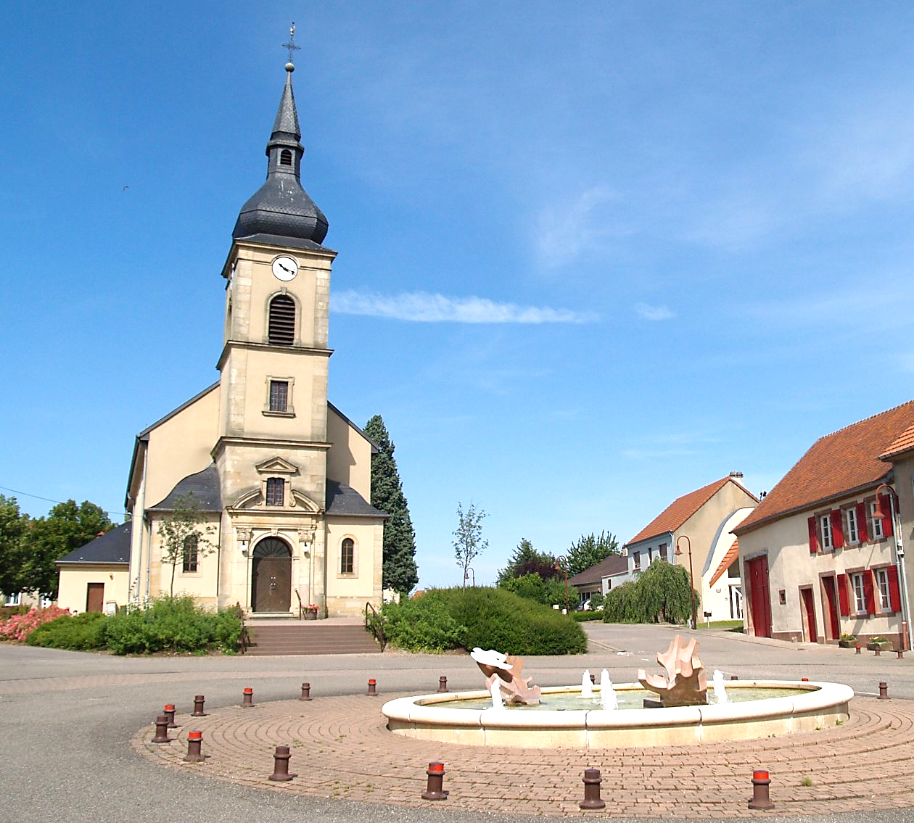
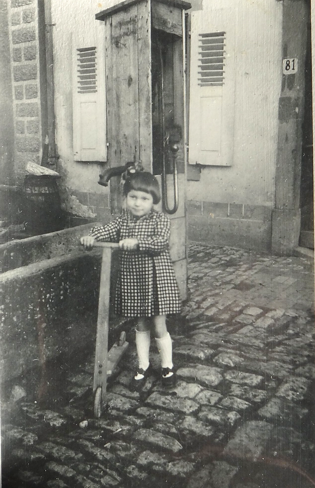
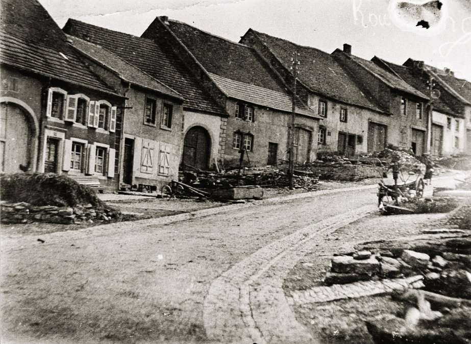
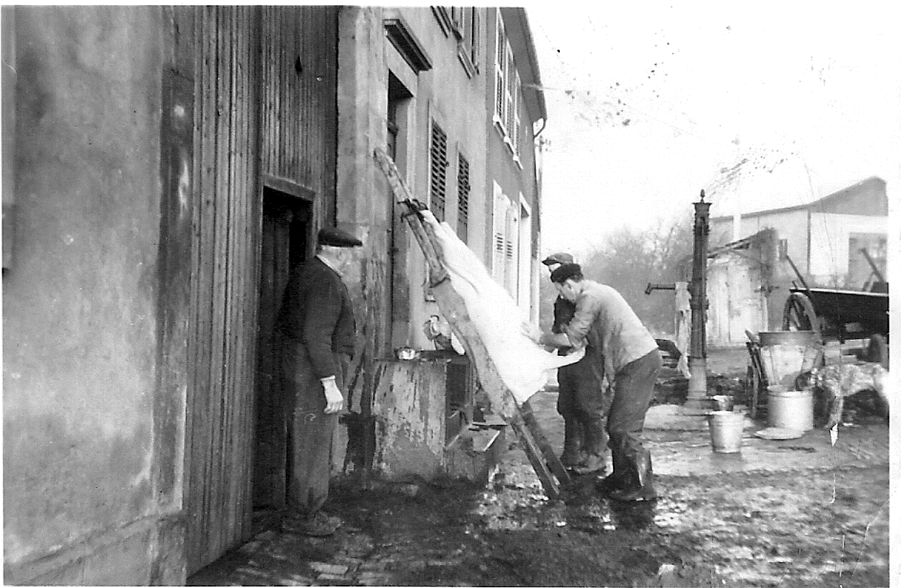
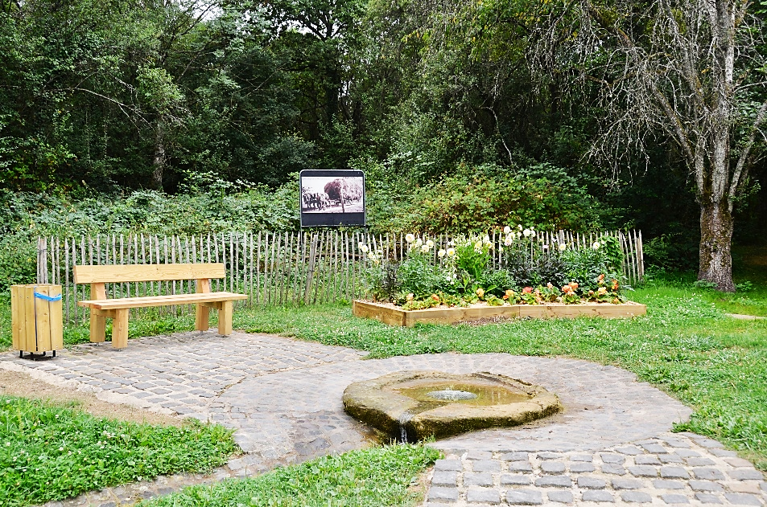
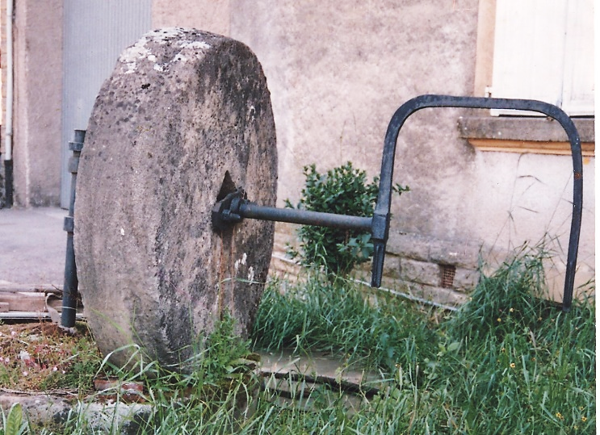
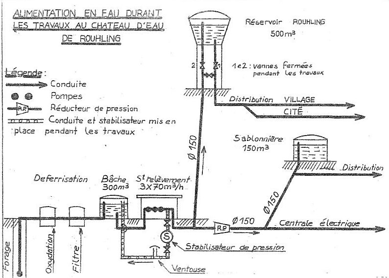
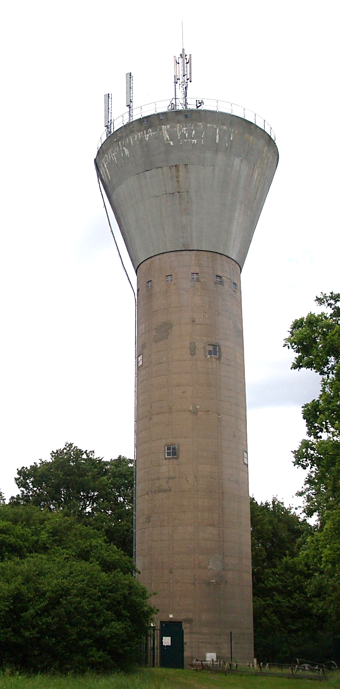

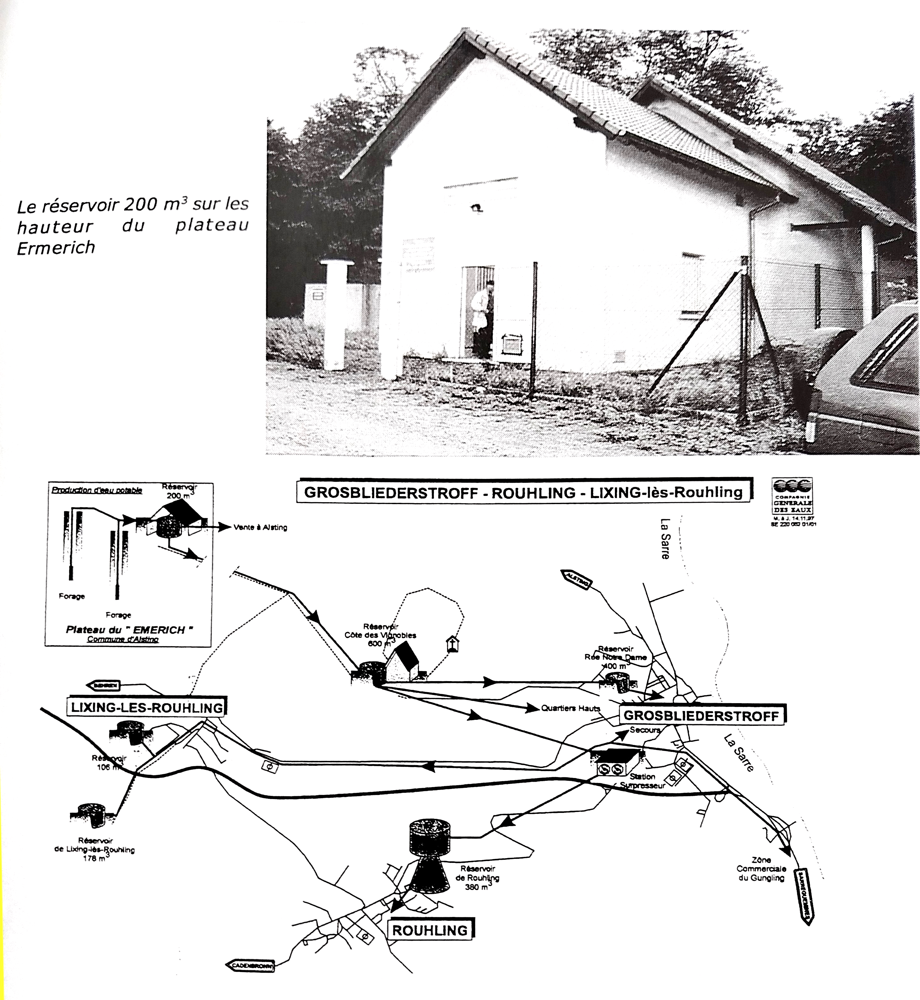